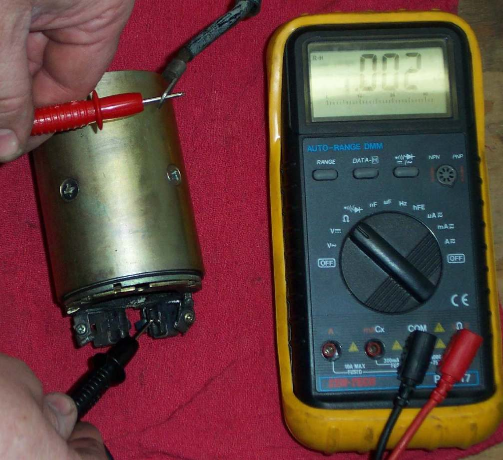

The starter motor is a small DC motor bolted to the crankcase. Its brushes press on a copper commutator to pass current into the spinning armature. Worn brushes, a dirty or burnt commutator, or a shorted armature give slow cranking or no cranking. Removing the motor is often a home job; testing and repairing the inside is best done by a workshop or auto electrician.
Safety
- Key OFF. Disconnect the battery negative (−) before touching the starter cable. The K-Light 125 manual then asks you to press start to confirm that nothing turns.
- Let the engine cool. The starter often sits near the exhaust.
- Do not run the starter on the bench with jump leads unless you hold it firmly in a vice. It kicks hard.
Before you remove it
Do these checks first. A starter is often blamed for a battery or cable fault.
- Battery charged and terminals clean: Test and charge a 12 V battery.
- Full battery voltage reaches the starter terminal while cranking: Test the starter circuit.
- The engine turns freely by hand or with the kickstarter. A tight engine is not a starter fault.
What you can do at home
- Disconnect the battery negative.
- Remove the cable from the starter terminal.
- Remove the starter mounting bolts and pull the motor out of the crankcase. Catch the O-ring.
- Look at the gear on the end of the shaft: chipped or worn teeth mean the gear it drives may also be damaged.
- Check that the shaft turns smoothly by hand.
- Check the earth face where the motor bolts to the engine. Clean it to bare metal.
What the workshop will check
- Brush length. K-Light 125: standard 12.5 mm, service limit 8.5 mm. Replace brushes below the limit.
- Brush springs: weak springs give poor contact.
- Commutator: dirty, burnt or worn deep grooves.
- Armature: tested for open or shorted windings with a meter or growler.
- Bearings and bushes for play.
- A bench run test under load, if they have the equipment.
Ask for: the measured brush length, the state of the commutator, and whether brushes alone or a complete starter is needed. A rebuilt starter can be good value; check the warranty.
Refitting
- Fit a new O-ring and smear it with a little oil or grease.
- Push the motor fully into place by hand. Do not pull it in with the bolts.
- Tighten the mounting bolts. K-Light 125: 10 to 12 N·m.
- Fit the cable and its rubber cover. Reconnect the battery.
Check your work
- Cranking speed is normal and even.
- No grinding when the starter engages.
If it did not fix the problem
- Starter spins but the engine does not turn: Check the starter clutch.
- Grinding noise: Grinding or screeching noise when starting.
Reference values (K-Light 125)
| Item | Value | PDF page |
|---|---|---|
| Starter brush length, standard | 12.5 mm | 91 |
| Starter brush length, service limit | 8.5 mm | 91 |
| Starter motor mounting bolts | 10 to 12 N·m | 92 |